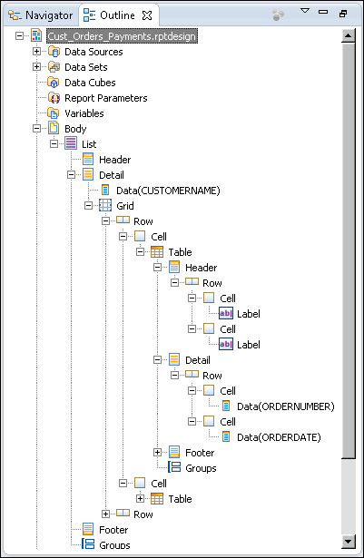

This report contains several levels of nested elements. At the top-most level is the list element. Within the list is a grid, which contains two tables. Within each table are data elements. The layout editor shows the borders of container elements and data elements, but for a container using several levels of nested elements, it can be difficult to see and select individual elements.
To get a clear view of the hierarchy of elements, use the Outline view. Figure 12-27 shows the outline of the report, which appears when the layout editor is selected. Select Body, then expand each item to view all the elements in the report.

If you have difficulty selecting an element in the layout editor, select the element in the Outline view. When you select an element in Outline, the element is selected in the layout editor.